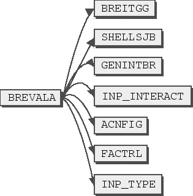
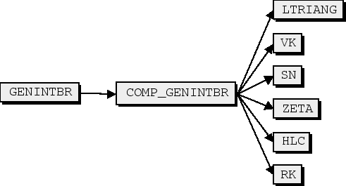
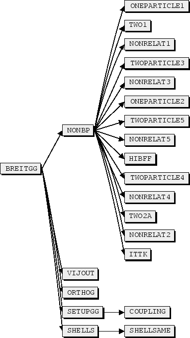

Once radial functions have been determined that simultaneously represent
several LS terms, providing a basis for a Breit-Pauli expansion of LSJ
wave functions, a configuration interaction calculation may be performed
for determining selected eigenvalues and wave functions expansions or
eigenvectors. In the present design the Breit-Pauli Hamiltonian is
represented as a sum of the non-relativistic Hamiltonian, , and
the relativistic contribution, :
|  | (9) |
The relativistic part, is a sum of the contributions of:
| (10) |
where the first four terms, mass, Darwin, spin-spin contact, and orbit-orbit, give a non-fine structure contributions, which are not J dependent. The last three, spin-orbit, spin-spin, and spin-other orbit define fine structure splitting.